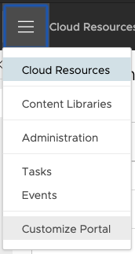
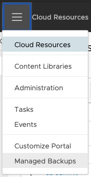

Veeam Plugin Deployment
VMware Plugin Lifecycle Manager
As the VMware Plugin Lifecycle Manager comes pre-installed with vCloud Director 9.7 and newer, it's the easiest method for deploying the Veeam Plugin for VCD. It can also be installed for versions 9.1 & 9.5 using these instructions.
Requirements
- VMware Plugin Lifecycle Manager
- Pre-Installed with vCloud Director 9.7 and newer
Deployment Steps
- Download the current plugin
- Unzip the plugin files
veeam-vcd-plugin-X.X.X.zip - Open
Customize PortalorPlugin Lifecycle Managementfrom the drop-down in the VCD Provider Portal- Example:
https://vcd.home.lab/provider
- Example:

- Upload
plugin.zipfound in the Veeam Plugin files downloaded - Select Scope & Publishing
- Scope to:
- Check box for Service Providers
- Check box for Tenants
- Publish to:
- Select as desired. If a tenant is not checked, they will not see the Veeam Plugin for VCD.
- Scope to:
- Finish out the wizard
- Upon successful deployment, refresh your browser window (or logout/login to VCD)
- Verify the plugin shows up in the drop-down for VCD entitled
Managed Backups:

- You can now proceed to configuring the Veeam Plugin.